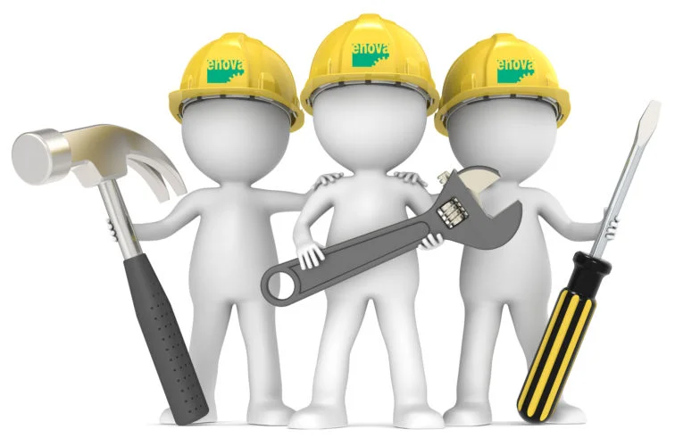

Proyectos Destacados
Una pequeña introducción de algunos proyectos que he realizado,
demostrando mis habilidades y las distintas tecnologías usadas.

Trabajando en ello
Trabajando en ello Trabajando en ello Trabajando en ello Trabajando en ello

Trabajando en ello
Trabajando en ello Trabajando en ello Trabajando en ello Trabajando en ello Trabajando en ello